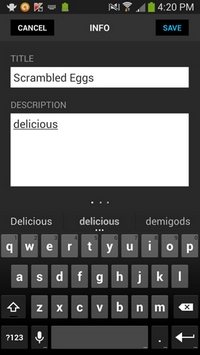
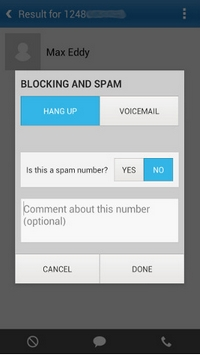

L'utilisation réduite du clavier
Le clavier est un outil indispensable dans l'utilisation d'un ordinateur. Il permet d'entrer des informations et de les manipuler à l'aide de raccourcis. Il s'agit d'un des ports externes les plus utiles. Cependant, il devient légèrement mois utile lors de la prise en main d'une application orientée mobile.
Sur une tablette ou un téléphone portable, le clavier peut devenir très gênant pour certaines manipulations. Il est donc important dans la conception d'un contenu pour ces supports de ne pas se baser sur une utilisation trop poussée du clavier. Taper de longs textes peut être fatigant pour les doigts mais également pour les yeux, car cela force l'attention sur des éléments de petite taille, parfois compliqués à cibler. L'utilisateur peut donc mettre du temps pour écrire ce qu'il souhaite.
Le mieux est de faire appel le plus possible aux données déjà présentes dans l'appareil. L'application peut être connectée au téléphone ou à la tablette et accéder au répertoire par exemple, ce qui fait gagner du temps et qui permet de ne pas donner trop d'importance au clavier.
Pepperplate Recipe, Menu & Cooking Planner
 L'application Pepperplate Recipe, Menu & Cooking Planner permet de gérer le repas de l'utilisateur. Afin de réduire l'utilisation du clavier, il est possible d'importer des recettes toutes faites de sites Internet, de les gérer et les organiser en différentes listes. Les données sont téléchargeables pour la plupart, l'internaute n'a donc pas à entrer toutes les informations qu'il désire mais juste une petite partie. Cela apporte un gain de temps.
Mr. Number-Block calls, texts
 Mr. Number-Block calls, texts est une application qui permet de bloquer des numéros afin de ne plus être dérangé par des appels inconvenants. Il est possible d'ajouter un petit commentaire à propos du numéro bloqué. Cependant, il aurait été intéressant de se pencher sur un autre moyen que le clavier afin laisser un commentaire. Une liste de petits icônes à sélectionner aurait peut-être été une bonne idée.